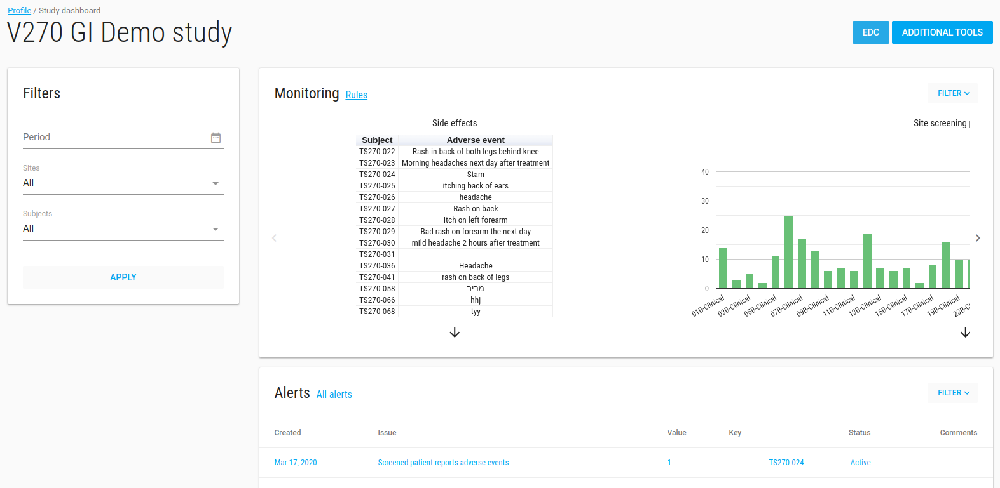
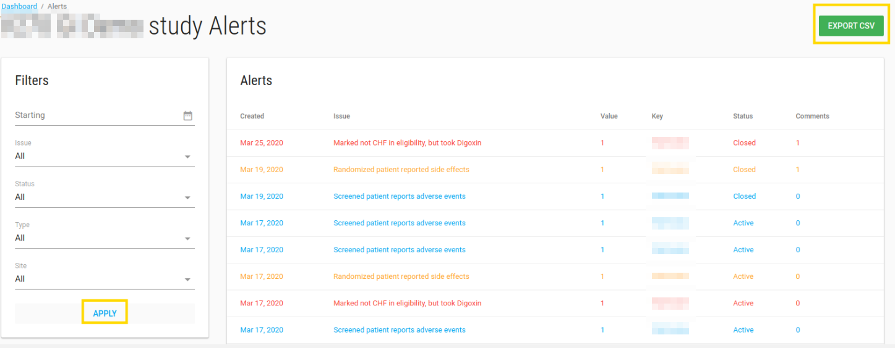
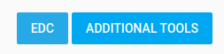

Study Dashboard
Study Dashboard shows your study monitoring.
On the studies index page, click on your study to view your study dashboard.
Important
By pressing on study, the study name appear in the title bar and all of the actions will be related to this study (i.e. add user, add site, etc.)

To see your data monitoring in the dashboard, you should define it first with the monitoring option.
Monitoring
In the monitoring section there is a slick analytics of your study data.
The graphs can be viewed as a bar graph, pie graph, table, etc. Graphs can be customized to have different colors (red, green or blue)
Alerts
In the alerts card, there is a table with the last 10 active alerts.
If there are active alerts for this study, a bell appears in title bar with the number of alerts.

You can click on each alert to see more properties, add comments, or change its status.

To see all alerts from this study click on the blue All alerts link.

All Alerts
On the Study->All Alerts page, you can see all alerts from this study.
You can filter the alerts, export them to CSV file, and update the alert status by pressing on alert.

Filters
On the study dashboard page there is a filter option.
- Period - alert date <= this select date
- Sites
- Subjects
This filter filters graphs and alerts accordingly.
EDC
If this study has EDC DB, the blue EDC button appears.
Clicking it opens a new window with the study ClinCapture app.

Additional Tools
There is option to add tools to your study.
The optional tools exist in Tools.
If you want other users (study role and site role users) to see tools, you need to add them to the specific study.
Click on the blue ADDITIONAL TOOLS button, and the study tools page opens.
You can add/remove tool from this study by click on the green ADD A TOOL button.

Manage tools page opens:

Study tools page available to all research users.
By pressing tool, you enter that tool and see the data (Of course site role users can only see their site data).